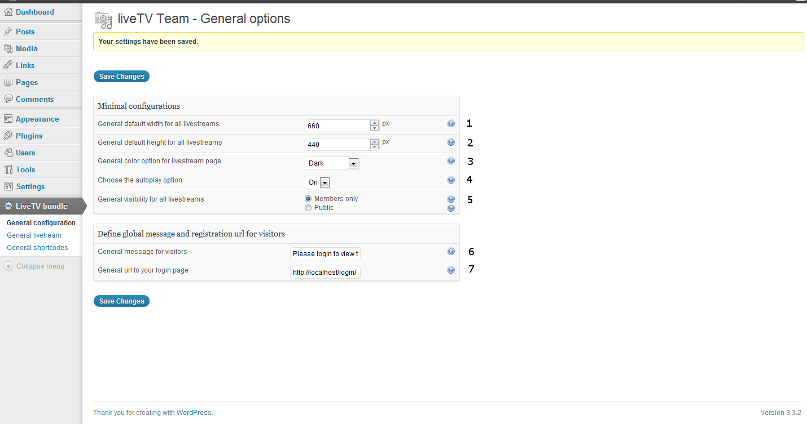

LiveTV Bundle for WordPress
Starter Guide
Thank you for purchasing my plugin. If you have any questions that are beyond the scope of this help file, please feel free to email via my user page contact form here. Thanks so much!
Introduction
This documentation is a starter guide and contains
-
A quick starter guide, step by step.
-
That explains what you can do with the plugin.
-
Also explains the options
-
Explain the automated livestream page with its view modes
-
Explain the manual shortcode possibilities
Technical feature
Details of technical features
-
Create automatically a page with livestreams from your team members in a loop of thumbnails
-
Create new roles or use wordpress default roles to give this access to your team members
-
View current game
-
View xplit message
-
View live!since date and hour
-
Display or not livestreams offline
-
Generate thumbnails list for each types (own3d, justin, twitch) and change the display order
-
Large view and normal view
-
Cache system
-
Sidebar widget
-
Generate automatically one IRC Channel under each livestream
-
Colorization system for text (all html color) and 3 general themes. Applied this plugin easily to the most popular themes without coding.
-
Optional: work also with different manual shortcodes in articles or pages for temporary events (current livestream + its IRC channel).
-
Compatible with all recent major browser IE9 , Safari, Chrome, Firefox, Opera
-
Highly customizable and adaptive to all major themes with administration options without coding.
-
Compatible with WordPress network (multi-sites system)
-
* Langage .mo included en US, en EN, fr FR
Introduction scenario
What's "introduction scenario" ?
-
This plugin was built in a bundle of plugins in the same folder. However, you have nothing to configure, this plugin uses the basics of WordPress.
-
You simply goes to Dashboard > section Plugins and activate only the plugin part LiveTV - * you need for your usage. A rule exist: e.g. Imagine: you use LiveTV - 2 - livestream -> all sub-parts (0 + 1 + 2) must be activated. Thisallows to use only the applications you need for your usage.
Description of the part in your wordpress Dashboard > Plugins > installed plugins
LiveTV Team - 0 - Main Fork
The necessary part for all sup-parts (activate this part first)
liveTV Team - 1 - General shortcode
The necessary part to use manual shortcode in posts or pages
-
require LiveTV Team - 0 - Main Fork activated
For more informations on manual shortcode usage manual_shortcode_usage
liveTV Team - 2 - Display lives
The necessary part to create a page automatically with the loop of thumbnails and the two single mode, large view and normal view.
-
require LiveTV Team - 0 - Main Fork activated
-
require liveTV Team - 1 - General shortcode activated
liveTV Team - 3 - IRC chat
The necessary part to create a IRC Channel automatically (Chat zone) under each livestream.
-
require LiveTV Team - 0 - Main Fork activated
-
require liveTV Team - 1 - General shortcode activated
-
require liveTV Team - 2 - Display lives activated
information: work also lonelly for displaying irc chat only and with manual shortcode
liveTV Team - 4 - Widget
The necessary part to have a new widget in your administration area > widget section to create and view a list of livestream on the sidebar.
-
require LiveTV Team - 0 - Main Fork activated
-
require liveTV Team - 1 - General shortcode activated
-
require liveTV Team - 2 - Display lives activated
Why i do introduced this technique ?
The usage you make of the plugin is perhaps not the same usage of another user. Maybe, you will create a team and have lots of livestream.
Another user downloads this plugin maybe because he needs to create chat box with manual shortcode in a few articles or in a page to chat with its members. Then, nothing else.
Now, we can talk about: scenario of use
Installation scenario
Installation scenario
You have a team and you desire to share all your livestreams from your members in your team. You need also a sidebar widget
Activate all part of the plugin
-
LiveTV Team - 0 - Main Fork
-
liveTV Team - 1 - General shortcode
-
liveTV Team - 2 - Display lives
-
liveTV Team - 3 - IRC chat
-
liveTV Team - 4 - Widget
You have a team and you desire to share all your livestreams from your members but without sidebar widget
Activate this part of the plugin
-
LiveTV Team - 0 - Main Fork
-
liveTV Team - 1 - General shortcode
-
liveTV Team - 2 - Display lives
-
liveTV Team - 3 - IRC chat
You are the administrator of your site and you have only one livestream to share and one IRC to place under this livestream
Activate this part of the plugin
-
LiveTV Team - 0 - Main Fork
-
liveTV Team - 1 - General shortcode
-
liveTV Team - 3 - IRC chat (work lonely with manual shortcode to diplay IRC in a page or a post)
For more informations on manual shortcode usage manual_shortcode_usage
Options details
Configurations and quick explanations of options in administration
information: When you activate the plugin, all is done and nothing to configure. A lot of options are registered by default and all work fine for all user with administrator role. But, if you desire to define other values to adapt the plugin to a theme or for other reasons (like define some new roles where the user in this new role have access to share its livestreams): Here are details of options
First: In your administration Dashboard > liveTV Bundle > general configuration

These options in this section are the basics for the plugin for manual shortcode and livestream page.
-
General default width for all livestreams (this option define a default width value for all manual shortcode to fetch directly all livestream to your theme)
-
General default height for all livestreams (this option define a default height value for all manual shortcodes to fetch directly all livestream to your theme)
-
General color option (this option affect the general theme of the plugin and enqueue the theme of your choice for the plugin and the thumbnails)
-
Choose the autoplay option (This option define a default autoplay option and if "On", livestream start automatically when a user view a current livestream)
-
General visibility for all livestreams (if defined to "members only", all visitors view a link with the information of your choice defined in the option 6 and 7)
-
General message for visitors (this option is viewable only if you define on option 5 "members only". This option define a special message of your choice for the visitors in place of the livestream if the current user is not connected to your site)
-
The link of your choice (full link to your registration page, login page,...) for visitors (if options 5 is defined to "members only")
Now, in your wordpress Dashboard > liveTV Bundle > General livestream
Do not be afraid with the list of options. It's very intuitive and most are there to stylish the page livestream.
-
This option appears only when you create new roles and this option permit to delete a special role. when you delete a role, all your members in this role return to the members default wordpress role automatically.
-
The special roles list you have created with the plugin.
-
Affect the h3 on livestream page (choose image like own3d, justin, twitch image or change these h3 for a text value)
-
View live offline. Display or not the livestreams offline (you may choose on, off or off only on widget)
-
Choose a slide effect. At the bottom of each livestream, you have a quakenet irc chat. But behind the irc, you have the div "share option". This zone is draggable and also a JQuery effect exist to slide to this div "share option" when you click on this zone (when you have the cursor pointer). This option change the direction of the slider effect.
-
Choose a bubble dialog effect. You have 3 choices. This option change the color of the bubble dialog effect (all bubble onmouse over). You have one white, one grey and one black (black mimic the Youtube bubble).
-
Choose a cache time. The plugin request on some external platform (own3d, twitch, justin, livestream). This option decrease the request and make a faster display for the livestream page with thumbnails. This option affect all thumbnails list (on widget and on livestream page).
-
Make all chat IRC based on. All livestream have its IRC channel. This option generate automatically the structure of your choice for the #channelIRC name under each livestream.
-
Display thumbnails on 3 columns. With a few largest themes, or with a page template without sidebar, you may need to diplay thumbnails on 3 columns if you have the width to do that.
-
Disable button normal view. If you choose a page template without sidebar, the button "normal view" become uneccessary (and secondarily, the plugin may have a css bug with this page template without sidebar). This option disable the button "normal view".
-
Change color for thumbnails text informations. I have added this option because, in my test with a lot of other themes, the text informations at the right of the image thumbnail don't colorize correctly with a few themes. This option change the color of the text at the right side of each thumbnail.
-
Livestream display order. If you use multiple plateform (own3d, twitch, justin). You may change the display order of each thumbnails list on your livestream page.
-
Define your link to Facebook. Define the complete link to your Facebook page of your team.
-
Define your link to Twitter. Define the complete link to your Twitter page of your team.
-
Make this on new role. If you choose "on" a new zone 16 appears. If you choose off, a new zone appears also but with a list of default wordpress role.(an administrator have already access to livestream from their profile).
-
Define a name for your role (like Team Lol, Team Warcraft, ...) and create this role based on capabilities of a default wordpress role. When the role is created, we must put your involved users for this role in this role. (Dashboard > users > allusers > Retrieve this user > click on Edit to view its profil > change "Role:" for the new value).
How to: livestream page
Information if you lose (delete) accidentally your livestream page, the correct shortcode to make the loop of thumbnails with the view modes is: [LivesOnline]
-
Add livestream to your livestream page
-
Delete one livestream
-
Add a special role
-
Change role of a members of my team
How to add one livestream to your livestream page
Just go to your wordpress profil field. For own3d, add only the ID of your channel in the input "own3d" > Click on the default button wordpress to update your profil. For Twitch and Justin, is the same step but with the channelName.
How to delete a livestream
Just go to your wordpress profil field and select (in the delete option) the current channel when you desire to delete.
How to add a special role
Just go to your wordpress dashboard > liveTV Bundle > general livestream, Turn option "make this on new role" to "On" if is necessary. Now, add a name of your choice for the new role. Choose the capabilities for this role (based on some default role wordpress). Click on "Save changes".
How to change the current role of a member of my team
Just go to your wordpress dashboard > Users > all users. Retrieve this user. After, just click on "Edit" for this user and on the new page (its profil), change the value "Role:" for the new role.
Now this current user in your special role have access to add a livestreamID or livestreamName from its wordpress profil field.
How to: manual shortcode
Information if you lose (delete) accidentally your livestream page, the correct shortcode to make the loop of thumbnails with the view modes is: [LivesOnline]
How to make manual shortcode to create livestream or chat irc outside the loop of thumbnails/livestream page (e.g. in posts or pages)
own3d, twitch, justin. (Optionally and only for manual shortcode ustream/livestream exist)
basic
[livestream type="Type" channel="channelID"]
Required parameters
type="..." (may take parameters "own3d", "twitch", "justin", "livestream", "ustream")
channel="..." (channelID or channelName of the livestream from own3d.tv, twitch.tv, justin.tv, livestream.com, ustream.tv)
Optionals parameters (if nothing is defined, it's the default options from administration that take over)
width="..." (width in pixel)
height="..." (height in pixel)
autoplay="..." (may take parameters "true" or "false")
visibilty="..." (may take parameters "members only" or "public")
message="..." (a special message of your choice for visitors if visibility="members only")
registration="..." (your special link/login url to your login page if visibility="members only")
IRC Quakenet (or original chat IRC)
basic
[liveTVChat type="quakenet" channel="channelName"]
Required parameters
channel="..." (channelName of your choice for this IRC Chat or chanID from original chat on own3d, twitch,justin)
type="..." (may take parameters own3dn twitch, justin, quakenet)
Optionals parameters (if nothing is defined, it's the default options from administration that take over)
width="..." (width in pixel)
height="..." (height in pixel)
visibilty="..." (may take parameters "members only" or "public")
message="..." (a special message of your choice for visitors if visibility="members only")
registration="..." (your special link/login url to your login page if visibility="members only")
You may use something like that to create a livestream in a post or a page and under this livestream its IRC Chat
[livestream type="Type" channel="channelName"]
[liveTVChat type="quakenet" channel="channelName"]
CSS troubleshooting
If you have some css trouble for sidebar widget, you may edit the css file page-livestreams.css in livetv-bundle/css/page-livestreams.css
The two width attributs to edit is in this file and @ the bottom
/*For the widget and eventually css bug, edit the two width attributs and make some test */
/*Width of thumbnail */
li.widget_livetv_widget span.minithumb-own3d-thumb img, li.widget_livetv_widget span.minithumb-justin-thumb img, li.widget_livetv_widget span.minithumb-twitch-thumb img {
width:43%!important;
height:auto!important;
}
/*Width of texts */
li.widget_livetv_widget span.minithumb-own3d-info, li.widget_livetv_widget span.minithumb-justin-info, li.widget_livetv_widget span.minithumb-twitch-info {
width:54%;
}
Credits
I’ve used the following images, icons or other files as listed.
-
qTip2 – Pretty powerful tooltips – http://craigsworks.com/projects/qtip2/
-
jscolor, JavaScript Color Picker – http://www.gnu.org/copyleft/lesser.html
-
jQuery Easing v1.3 – http://gsgd.co.uk/sandbox/jquery/easing/
-
JQuery write less do more - http://jquery.com/
Thank you
Once again, thank you so much for purchasing this plugin. As I said at the beginning, I'd be glad to help you if you have any questions relating to this plugin. No guarantees, but I'll do my best to assist. If you have a more general question relating to the plugin you might consider visiting the forums and asking your question in the section. You may condider a donation @
http://kwark.allwebtuts.net to support my plugin. Thank you KwarK
Laurent (KwarK) Bertrand